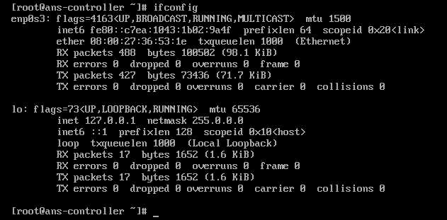
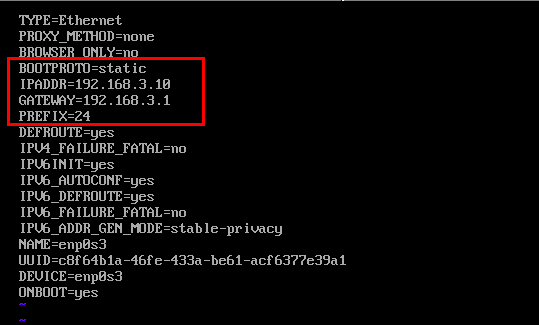
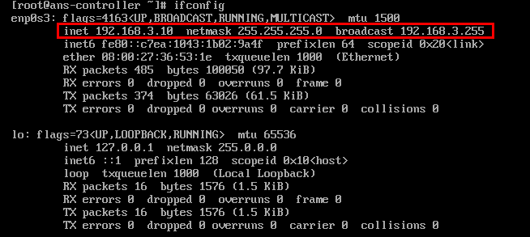

Static IP Addresses assigned to devices in the network remain constant. These type of IP Addresses are particularly useful when one hosts a dedicated service on their network. Clients can therefore directly connect to the server through the router whithout requiring to search for the IP Address for the server.
Static IP Addresses are setup manually on the servers and do not require a DHCP Server to be present on the network.
Since the IP Addresses are static, it is easy to find a particular device on the network.
- Example: Suppose a server in our network servers some specific service.
- It would be easy for the router to send a specific request for this service to this server.
Having a static IP Address allows the DNS to map a hostname to the static IP Address.
- If the IP Address frequently changes, the DNS needs to be reconfigured to map the hostname to the new IP Address.
If our IP Address of our server is dynamic and our server is hosting a service, the clients connected to it will have frequent disconnects the moment the IP Address for the server changes.
- This means that the clients need to constantly connect to the new IP Address assigned to the server.
- The router which will route the clients to the server will need to be hence updated with the new IP Address of the server.
A static IP Address will also be useful in case the Domain Name is inaccessible for the host.
- This can happen when the DNS Server malfunctions.
- In such cases, the clients can connect to the server using it’s IP Address.
- Devices like FTP Servers, Printers etc use Static IP Addresses for this very purpose.
Static IP Addresses can limit downtime.
- Suppose a server is hosting streaming services and is using a dynamic IP Address.
- Now the moment the IP Address for the server changes, all the clients connected to the server will be disconnected.
- The clients then have to wait to get the new IP Address for the server.
- This will cause an interruption in the streaming service being availed by the clients.
One disadvantage of Static IP Addresses can be for the ISP.
- The ISP provides IP Addresses dynamically to it’s customers.
- Suppose the ISP provides static IP Addresses to it’s customers, every new customer will have a small fixes pool from which IP Addresses can be assigned.
- Dynamic IP Addresses allows ISP to reuse an IP Address when it’s not in use therefore allowing a flexibility in scaling their customers.
The Static IP Address has to be setup and configured manually.
- If a devices is assigned an IP Address of let’s say
192.168.1.x in one network and then this device migrates to another network 10.3.2.y, the device will be required to be reconfigured to use the local network.
From a security perspective, if a device has a static IP Address, a hacker will get more time to search for vulnerabilities in the server.
- If however, the server uses dynamic IP Address, the hacker will have to change the way frequently in which the server is being communicated with.
The configuration for setting up Static IP Addresses will be done on a CentOS 8 machine.
- We will run the below command to get a set of network interfaces running on the server.

- Choose a network interface from the list and edit it.
- The path to the network interface file can be found below.
1
|
vi /etc/sysconfig/network-config/ifcfg-<some_interface_device_name>
|
- We will change the below values in this file.
1
2
3
4
5
|
BOOTPROTO=static
IPADDR=<some_desired_static_IP_Address>
GATEWAY=<the_gateway_IP_Address_of_the_network> # Typically, this is the IP Address of the Router
PREFIX=24
ONBOOT=yes
|

- Now we can do the two things below.
- Either we can bring down the network interface.
- Or we can restart the Network Manager service for CentOS.
1
2
3
4
5
|
# To bring down the network interface
ifdown <network_interface_name>
# To bring up the network interface
ifup <network_interface_name>
|
1
2
|
# Restarting the Network Manager
service NetworkManager restart
|
- Now we can check the IP Address of our Network Interface.
